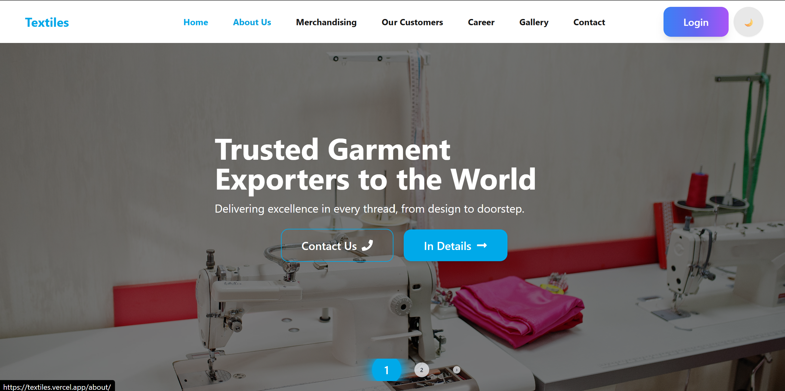
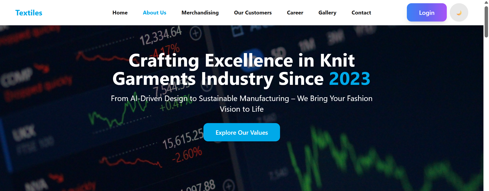
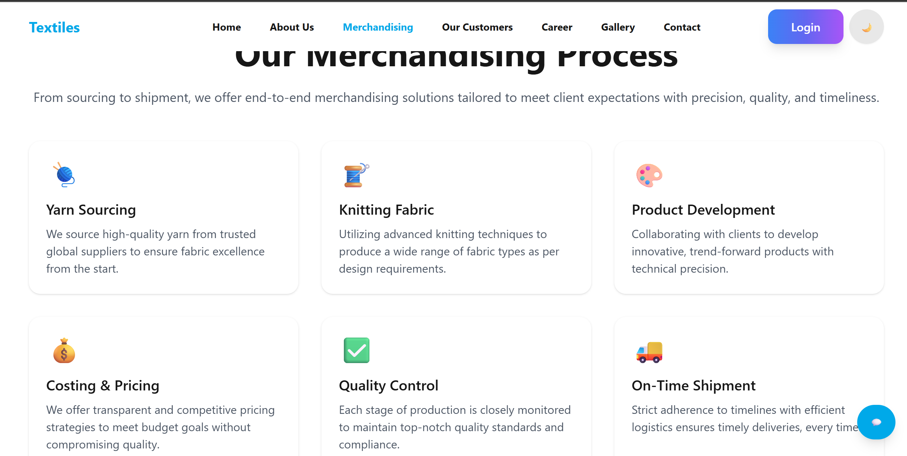
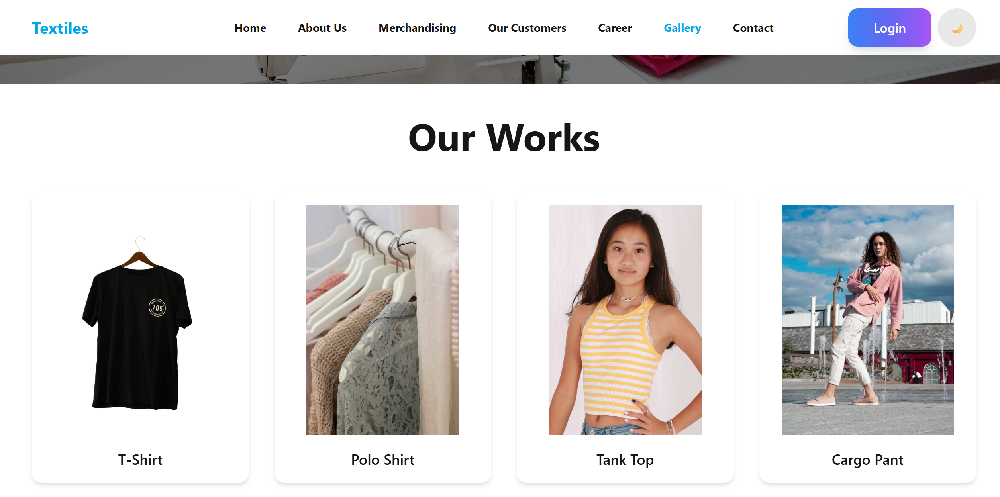

Textiles - Next.js Portfolio Template Documentation
Comprehensive guide for your textile business portfolio template
Introduction
Thank you for choosing Textiles - Next.js Portfolio Template. This documentation will guide you through the setup, customization, and deployment of your modern textile business portfolio website.

In this documentation:
Template Overview: Textiles is a modern portfolio template built with Next.js, Tailwind CSS, and TypeScript. It's designed for textile businesses, fabric manufacturers, fashion designers, and any business in the textile industry looking to showcase their work online.
Features
Textiles comes packed with features to help you showcase your textile business:
Next.js 14
Built with the latest Next.js features including App Router and React Server Components.
Fully Responsive
Perfectly adapts to all device sizes from mobile to desktop.
Tailwind CSS
Customizable design system with Tailwind CSS and easy theming.
Dark Mode
Built-in dark/light mode toggle with system preference detection.
SEO Optimized
Built-in SEO features and metadata management for better rankings.
High Performance
Optimized for fast loading times and smooth user experience.
Smooth Animations
AOS (Animate On Scroll) library for engaging scroll animations.
Clean Code
Well-organized, commented codebase for easy customization.
Technology Stack
Textiles is built with modern web technologies:
Demo Pages
The template includes the following pre-designed pages:

Home Page
Modern landing page with hero section, features, and call-to-action.

About Page
Company overview, mission/vision, team members, and milestones.

Merchandising Page
Showcase your Merchandising with detailed descriptions and pricing.

Gallery Page
Grid layout to showcase your textile products and projects.
Requirements
Before installing the theme, ensure your environment meets these requirements:
- Node.js - v18 or higher
- npm - v9 or higher (or yarn v1.22+)
- Operating System - Windows, macOS, or Linux
- Git - For version control and deployment
Recommended: Use the latest LTS version of Node.js for best performance and compatibility.
Installation
Follow these steps to set up Textiles on your local machine:
Step 1: Install Dependencies
Navigate to the template directory and install required packages:
cd textiles
npm install
# or
yarn installStep 2: Install Dependencies
Install all required packages using npm or yarn:
npm install
# or
yarn installStep 3: Configure Environment Variables
Create a .env.local file in the root directory and add
your environment variables:
# .env.local
EMAIL_HOST="smtp.example.com"
EMAIL_PORT=465
EMAIL_SECURE=true
EMAIL_USER=""
EMAIL_PASS=""
NEXT_PUBLIC_EMAILJS_CONTACT_FORM_SERVICE_ID=""
NEXT_PUBLIC_EMAILJS_CONTACT_FORM_TEMPLATE_ID=template_k42cntw
NEXT_PUBLIC_EMAILJS_CONTACT_FORM_PUBLIC_KEY=SCRr6WqN7Mb9ynDv7
NEXT_PUBLIC_EMAILJS_REQUEST_A_QUOTE_SERVICE_ID=service_jqd85q9
NEXT_PUBLIC_EMAILJS_REQUEST_A_QUOTE_TEMPLATE_ID=template_e3t90n8
NEXT_PUBLIC_EMAILJS_REQUEST_A_QUOTE_PUBLIC_KEY=SCRr6WqN7Mb9ynDv7
Email Configuration
This template supports sending emails via SMTP or using EmailJS for contact forms and request-a-quote forms.
1. SMTP Configuration
Set the following environment variables in your
.env file to configure your SMTP server:
EMAIL_HOST="smtp.example.com"
EMAIL_PORT=465
EMAIL_SECURE=true
EMAIL_USER="your_email@example.com"
EMAIL_PASS="your_email_password"
Note: Make sure to keep your
EMAIL_PASS secure and do not commit it to version
control.
2. EmailJS Configuration
Set the following environment variables to use EmailJS for forms:
NEXT_PUBLIC_EMAILJS_CONTACT_FORM_SERVICE_ID="your_service_id"
NEXT_PUBLIC_EMAILJS_CONTACT_FORM_TEMPLATE_ID="template_k42cntw"
NEXT_PUBLIC_EMAILJS_CONTACT_FORM_PUBLIC_KEY="SCRr6WqN7Mb9ynDv7"
NEXT_PUBLIC_EMAILJS_REQUEST_A_QUOTE_SERVICE_ID="service_jqd85q9"
NEXT_PUBLIC_EMAILJS_REQUEST_A_QUOTE_TEMPLATE_ID="template_e3t90n8"
NEXT_PUBLIC_EMAILJS_REQUEST_A_QUOTE_PUBLIC_KEY="SCRr6WqN7Mb9ynDv7"Note: Replace the IDs and keys with your own EmailJS service, template, and public key values.
3. Using the Configuration
-
For SMTP emails, the template uses
nodemailerto send emails from your server. - For EmailJS, the contact forms and request-a-quote forms use the provided service and template IDs to send emails directly from the frontend.
- Ensure your environment variables are correctly set and accessible by Next.js.
Important: Do not commit your
.env.local file to version control as it may contain
sensitive information.
Step 3: Run the Development Server
Start the development server with:
npm run dev
# or
yarn devYour site will now be running at http://localhost:3000
Project Structure
Here's an overview of the main directories and files in the template:
Configuration
Customize the template to match your brand identity:
1. Site Configuration
Edit the data files in src/db/data.ts to update your site
information:
// Example data structure
export const navLinks = [
{ path: "/", label: "Home" },
{ path: "/about", label: "About" },
// ... other navigation links
];
export const teamMembers = [
{
name: "John Doe",
role: "Founder & CEO",
image: "/images/team/john-doe.jpg",
bio: "Experienced textile professional with over 15 years in the industry...",
social: {
linkedin: "https://linkedin.com/in/johndoe",
// ... other social links
}
},
// ... other team members
];2. Theme Configuration
Modify tailwind.config.js to customize colors and fonts:
// tailwind.config.js
module.exports = {
theme: {
extend: {
colors: {
primary: '#00A9E9',
secondary: '#EC4899',
// ... other custom colors
},
fontFamily: {
sans: ['Inter', 'sans-serif'],
heading: ['Poppins', 'sans-serif'],
},
},
},
plugins: [require("daisyui")],
daisyui: {
themes: [
{
light: {
primary: "#00A9E9",
secondary: "#EC4899",
},
dark: {
primary: "#00A9E9",
secondary: "#EC4899",
},
},
],
},
};Styling & Theming
Textiles uses Tailwind CSS with DaisyUI for styling. Here's how to customize the appearance:
Color Scheme
The template uses a primary and secondary color scheme:
To change the color scheme, update the
tailwind.config.js file as shown in the Configuration
section.
Custom CSS
For additional custom styles, you can add them to
src/app/globals.css:
/* Custom styles */
@layer components {
.custom-button {
@apply px-6 py-3 rounded-lg font-semibold transition-all duration-300;
}
.custom-card {
@apply bg-white dark:bg-gray-800 rounded-xl shadow-md hover:shadow-xl transition-shadow duration-300;
}
}Components
Textiles includes several reusable components:
PolymorphicButton
A flexible button component that can render as a button or link:
import PolymorphicButton from "@/components/UI/PolymorphicButton";
// Usage
Navbar
The responsive navigation bar with mobile menu:
import Navbar from "@/components/UI/Navbar";
// Usage in layout
export default function RootLayout({ children }) {
return (
{children}
);
}ThemeToggle
Dark/light mode toggle component:
import ThemeToggle from "@/components/UI/ThemeToggle";
// Usage
Updating Content
To update the content of your website, follow these steps:
1. Text Content
Most text content is stored in src/db/data.ts. Edit the
exported arrays and objects to change:
- Navigation links
- Hero section content
- About page content
- Team member information
- Services offered
- Testimonials
2. Images
Replace the images in the public/images/ directory with
your own. Maintain the same folder structure and file names, or update
the references in the data files.
3. Pages
To create new pages, add a new directory in src/app/ with
a page.tsx file. For example:
// src/app/services/page.tsx
export default function ServicesPage() {
return (
Our Services
{/* Page content */}
);
}Deployment
Deploy your Textiles portfolio to Vercel with these simple steps:
Step 1: Create a Vercel Account
If you don't have one, sign up at vercel.com.
Step 2: Import Your Project
Connect your GitHub repository to Vercel:
- Go to your Vercel dashboard
- Click "Add New Project"
- Select your Textiles repository
- Click "Import"
Step 3: Configure Build Settings
Vercel will automatically detect Next.js and configure the build settings. You don't need to change anything.
Step 4: Deploy
Click "Deploy" and Vercel will automatically build and deploy your application.
Note: Vercel provides a free tier that's perfect for portfolio websites.
Other Deployment Options
You can also deploy to other platforms:
Netlify
# Build command
npm run build
# Publish directory
.outGitHub Pages
# Install gh-pages package
npm install --save-dev gh-pages
# Add to package.json
"scripts": {
"build": "next build && next export",
"deploy": "gh-pages -d out"
}SEO Optimization
Textiles includes several SEO features out of the box:
Meta Tags
Update the metadata in src/app/layout.tsx:
export const metadata: Metadata = {
title: "Your Textile Business Name",
description: "Description of your textile business",
keywords: ["textiles", "fabric", "your", "keywords"],
authors: [{ name: "Your Name" }],
openGraph: {
title: "Your Textile Business Name",
description: "Description of your textile business",
url: "https://yourwebsite.com",
siteName: "Your Textile Business Name",
images: [
{
url: "/og-image.png",
width: 1200,
height: 630,
alt: "Your Textile Business Name",
},
],
type: "website",
},
twitter: {
card: "summary_large_image",
title: "Your Textile Business Name",
description: "Description of your textile business",
images: ["/og-image.png"],
},
};JSON-LD Structured Data
The template includes JSON-LD structured data for better search engine understanding:
const jsonLd = {
"@context": "https://schema.org",
"@type": "Organization",
name: "Your Textile Business Name",
url: "https://yourwebsite.com",
logo: "https://yourwebsite.com/logo.png",
sameAs: [
"https://www.facebook.com/yourpage",
"https://www.instagram.com/yourpage",
// ... other social media
],
contactPoint: {
"@type": "ContactPoint",
telephone: "+1-123-456-7890",
contactType: "Customer Service",
email: "info@yourwebsite.com",
},
description: "Description of your textile business",
};Image Optimization
Next.js automatically optimizes images with the next/image component. Always include alt text for accessibility and SEO:
import Image from "next/image";
Performance Optimization
Textiles is optimized for performance with these techniques:
Next.js Optimization
- Automatic code splitting
- Image optimization with next/image
- Server-side rendering and static generation
- Font optimization
Bundle Analysis
Analyze your bundle size to identify optimization opportunities:
# Install @next/bundle-analyzer
npm install @next/bundle-analyzer
# Update next.config.js
const withBundleAnalyzer = require('@next/bundle-analyzer')({
enabled: process.env.ANALYZE === 'true',
});
module.exports = withBundleAnalyzer({
// your Next.js config
});
# Run the analysis
ANALYZE=true npm run buildLazy Loading
Components and libraries are lazy-loaded when possible:
import dynamic from 'next/dynamic';
const DynamicComponent = dynamic(() => import('../components/DynamicComponent'), {
loading: () => Loading...
,
});Support
We're here to help you with any questions or issues:
Documentation: First, please refer to this documentation as it covers most common questions.
Email Support: For ThemeForest buyers, contact us at rhshuvo121@gmail.com
Changelog
Version 2.0 (Current)
- Upgraded to Next.js 14
- Added dark mode support
- Improved mobile navigation
- Added new portfolio components
- Fixed responsive design issues
Version 1.1
- Initial public release
- Core portfolio functionality
- Responsive design implementation
Credits
Textiles makes use of these third-party resources:
- Next.js - React framework
- Tailwind CSS - Utility-first CSS framework
- DaisyUI - Tailwind CSS components
- React Icons - Icon library
- AOS - Animate On Scroll library
- Unsplash - Stock photos (replace with your own)
Important: Make sure to replace all Unsplash images with your own licensed images before publishing your website.